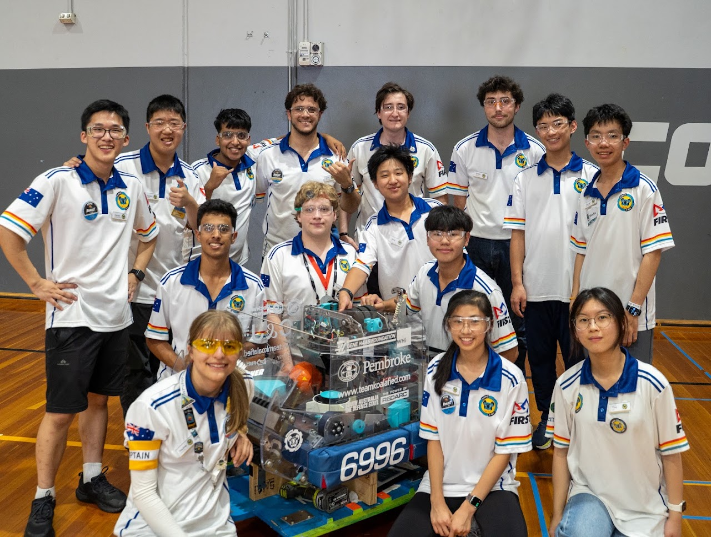

Code of Conduct
Everyone at Koalafied is responsible for their own safety and the safety of those around them. Above all, every team member should feel safe, respected, and able to enjoy their time on the team.
We follow FIRST's principles of Gracious Professionalism and Coopertition: we compete hard, help our competitors, and treat everyone with respect. We are a relaxed but professional team that prioritises learning and cooperation over any individual result.
This code applies at all team meetings, builds, outreach events, competitions, and travel, and to all team communication channels.

Part 1: Everyone
1. Personal protective equipment
Safety glasses must be worn at all times in the workshop, including when you are not personally using tools. Additional PPE (hearing protection, gloves, face shield, respirator) must be worn where signage, a mentor, or the task requires it.
2. Attire
Closed-toe shoes are mandatory. Long hair must be tied back. Remove or secure loose clothing, lanyards, scarves, and dangling jewellery before using any machine.
3. Housekeeping
Clean up your workspace before you leave. Return tools, sweep offcuts and swarf, and never leave a machine, iron, or 3D printer running unattended. No food or drink at workbenches or near electrical or machining work.
4. Injuries and incidents
Report every injury, near-miss, and equipment fault to a mentor immediately, no matter how minor. Do not attempt to fix or hide a problem yourself. Know the location of the first aid kit, fire extinguisher, exits, and machine emergency stops.
5. Robot and electrical safety
- The robot is only powered on when a mentor is aware and the surrounding area is clear.
- Never reach into the robot frame while it is powered.
- Batteries are handled with care: no shorting terminals, no dropping, no charging unattended, and damaged or swollen batteries are removed from service and reported.
6. Treatment of others
Treat all team members, mentors, volunteers, and competitors with respect, understanding, and kindness. Bullying, harassment, discrimination, hazing, sexual harassment, and intimidation are not tolerated in any form, in person or online.
7. Online and digital conduct
Team channels are for team purposes and the same standards apply there as in person. Do not share photos or footage of other members without their consent, and do not post anything that identifies a student without checking with a mentor first.
9. Attendance
Tell a mentor as early as possible if you cannot attend a scheduled meeting (or will be late) so tasks can be reallocated.
10. Visitors
Visitors must sign in, be briefed on safety, wear safety glasses, and stay with a team member.
Part 2: Students
1. Never work alone
Do not work in the workshop unless a mentor is present in the building and aware of what you are doing. This applies even for tasks with no tools involved.
2. Tool supervision
- Hand tools (screwdrivers, spanners, files, hacksaws, hand riveters): use freely once briefed, with a mentor in the building.
- Powered hand tools (drills, soldering irons, rotary tools, rivet guns): use independently only with mentor approval, if confident, and using the correct tool for the task. A mentor must be in the workshop.
- Fixed machinery (lathe, drill press, bandsaw, drop saw, CNC): direct mentor supervision at all times, no exceptions.
3. Speak up
If you see something unsafe, say so, regardless of who is doing it. If you are uncomfortable with how you or someone else is being treated, tell a mentor, a parent, or the team's safeguarding contact.
Part 3: Mentors and Adult Volunteers
1. Working with Children Check & RRHAN
All mentors and adult volunteers must hold a valid, verified Working with Children Check before attending on a regular basis. Mentors must also complete RRHAN training for volunteers.
2. Two-person supervision
No adult should be alone and unobserved with a single student. At least two adults should be present at meetings and events wherever possible.
3. Communication
Communicate with students through public or group channels (Slack, Teams, group email). If a one-to-one message is unavoidable, copy in another mentor or a parent. Do not connect with students on personal social media accounts.
6. Modelling behaviour
Mentors are held to every rule in Part 1: including safety glasses, PPE, and conduct. Students copy what they see.
7. Teach, don't take over
Where it is reasonable and safe, include students in the work rather than doing it for them. The goal is that students build the robot.